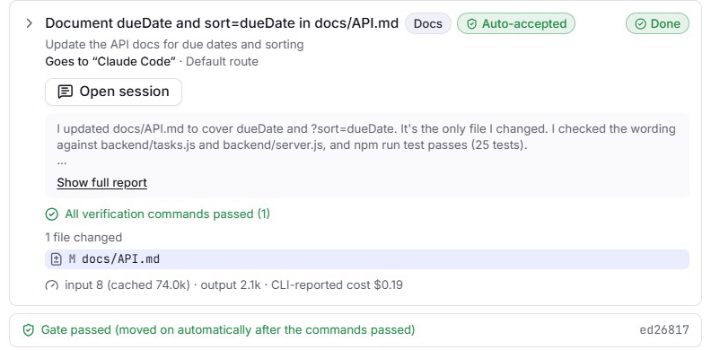

Agenten sagen „fertig“.
Deine Tests entscheiden.Eine kostenlose Windows-App, mit der sich Claude Code und Codex die Arbeit teilen und die eine Übergabe vorschlägt, wenn einem das Kontingent ausgeht
Mehr als Sitzungen nebeneinander. Beschreib die Arbeit einmal: Pyloxa plant sie, verteilt die Aufgaben auf Claude Code und Codex und führt deine Tests aus, bevor gemergt wird.
Oder melde dich an und teste die Pro-Vorschau kostenlos →- Nativ unter Windows, ohne WSL
- Läuft mit deinen eigenen Abos
- Fasst deine CLI-Anmeldungen nie an
- Oberfläche in neun Sprachen
Das sind Beispielregeln von Pyloxa. Du schreibst deine eigenen, und jede Aufgabe zeigt die Regel, die gegriffen hat.
So funktioniert’s
Zuerst sagst du, was du willst.

Dann gibst du den Plan frei.

Zum Schluss mergst du, was bestanden hat.
- Adocs/api/profile.yaml
- Aserver/src/routes/profile.ts
- Aweb/src/pages/Profile.tsx
- Atest/profile.test.ts
- Atest/contract.test.ts
Ein Workflow, fünf Stufen
Die Seite „Workflow“ in der App zeigt den ganzen Ablauf auf einmal: wer plant, welche Phasen es gibt, wer welche Art von Arbeit übernimmt, wie geprüft und wie übergeben wird. Jede Stufe ist deine Einstellung; der Planer schlägt nur Pläne vor und kann daran nichts ändern.
Planung: wer der Planer ist und wie viel du aus der Hand gibst
Jedes Profil kann der Planer sein, der das Projekt liest und den Plan schreibt, und der Planer kann ein anderes Modell nutzen als die Agenten, die die Arbeit machen.
- Ein Profil legt CLI, Modell, Reasoning-Stufe und einen Rollen-Prompt fest, der jeder Aufgabe mitgegeben wird. Eine CLI kann mehrere haben, etwa „Claude Frontend“ und „Claude Doku“.
- Der Routing-Modus legt fest, wann Pyloxa dich vorher fragt. In keinem Modus wird von selbst gepusht oder deployt.
- Ist der Planer nicht verfügbar, kann Pro die Planung an einen Ersatz-Planer übergeben. Der Planer prüft nie Arbeit, die er selbst gemacht hat.
Phasen: Der Planer legt sie an, oder du gibst sie vor
Der Planer legt Phasen passend zur Anfrage an, etwa Spezifikation, Schnittstellenvertrag, Implementierung und Tests. Vor der Freigabe kannst du eine Aufgabe neu zuweisen, ihre Anweisungen bearbeiten oder den Planer um eine Überarbeitung bitten.
- Jede fertige Aufgabe wird in ihrem eigenen Worktree geprüft; am Ende jeder Phase läuft das Gate noch einmal auf dem integrierten Ergebnis.
- Ein Gate kann nach dem Bestehen von selbst weitergehen oder auf deine Freigabe warten.
- Oder du nutzt eigene Phasen: bis zu fünf, und für jede entscheidest du, wer sie übernimmt, ob sie am Ende auf deine Freigabe wartet und ob sie entfallen kann, wenn eine Anfrage sie nicht braucht. Auch in der kostenlosen Version.
- Sobald ein Plan freigegeben ist, zeigt ein Fortschrittsbalken oben auf der Plankarte den Status jeder Phase und in welcher du gerade bist; klick auf eine Phase, um dorthin zu springen.
- Die nächste Phase bekommt ein Übergabepaket: die Ergebnisse, die bestandenen Prüfungen und worauf zu achten ist.
- Agent Teams (experimentell, Pro): Laufende Agenten sehen die Aufgaben des ganzen Teams, melden Fortschritte und halten an, um dich zu fragen, wenn ihnen Informationen fehlen.
- 1Spezifikation und ContractCodexGate bestanden
- 2EntwicklungFrontend Claude Code · Backend CodexLäuft
- 3TestenWartet danach auf deine FreigabeWartet
Zuweisung: Eine Tabelle legt fest, wer was macht
Jede Zeile der Zuweisungstabelle ist eine Art von Arbeit. Wähle, an welchen Agenten sie zuerst geht und welcher übernimmt; bleibt eine Zelle leer, bekommt dieser Agent sie nie.
- Regeln werden von oben nach unten geprüft, und der erste vollständige Treffer gewinnt. Pyloxa warnt dich, wenn eine Regel eine andere verdeckt.
- Regeln für ein einzelnes Projekt oder eine einzelne Phase stehen in der Regelliste und haben Vorrang vor der Tabelle.
- Die Regelsimulation ruft keinen Agenten auf und verbraucht kein Kontingent: Wähl eine Art Aufgabe und sieh, wer sie bekommt und warum.
- Wenn nichts passt, fragt Pyloxa dich in der Planvorschau oder hält an, je nachdem, was du einstellst. Es wählt nie zufällig einen Agenten.
| Aufgabentyp | Claude Code | Codex | Gemini CLI |
|---|---|---|---|
| Frontend | |||
| Backend | |||
| Doku | |||
| Tests | |||
| Bilder |
Prüfungen: Sagt ein Agent, er sei fertig, zählt das nicht
Pyloxa führt die Prüfbefehle, die du freigegeben hast, im eigenen Worktree der Aufgabe aus, und die Aufgabe gilt erst als fertig, wenn sie bestehen. Schlagen sie fehl, bekommt der Agent einen automatischen Korrekturversuch.
- Prüfbefehle wie
npm run testbrauchen deine Freigabe, und du kannst sie vorher in einem temporären Worktree ausprobieren. Der Planer kann nur Befehle nutzen, die du freigegeben hast. - Gib eine fertige Aufgabe zum Testen an einen anderen Agenten, zum Beispiel baut Codex und Claude Code schreibt die Tests. Der Tester darf nur Testdateien ändern, und Pyloxa führt deine Befehle auf dem Ergebnis erneut aus.
- Der Planer kann fertige Arbeit reviewen, mit eigenem Modell und eigener Denktiefe. Sein Urteil ist als KI-Review gekennzeichnet, und eine Aufgabe, die dein Review verlangt, wartet trotzdem auf dich.
In Arbeit
Verifiziert
Füge einen Endpunkt GET /api/profile hinzu, der das angemeldete Mitglied zurückgibt, mit Tests.
GET /api/profile hinzugefügt. Gibt Name und E-Mail des Mitglieds zurück, mit 2 Tests. npm run test bestanden.
Integriert
Übergabe: Du entscheidest, was gemergt und gepusht wird
Jede Aufgabe wird in ihrem eigenen git-Worktree fertig und gegen ihren Schreibbereich geprüft, bevor sie in den Integrations-Branch gemergt wird. Das Mergen in deinen Branch, das Pushen und das Öffnen eines PR warten auf dich.
- Die PR-Beschreibung kann einen Prüfbericht enthalten: eine Tabelle pro Phase, die zeigt, wer die Arbeit gemacht hat, wer das Cross-Testing übernommen hat, welche Befehle Pyloxa ausgeführt hat und wie jedes Ergebnis angenommen wurde. Sagt ein Agent, er sei fertig, zählt das nicht als bestanden.
- Die Schlusszeile ist standardmäßig aus. Schaltest du sie ein, steht dort nur dann „Verified with Pyloxa“, wenn jedes Ergebnis die Befehle bestanden hat, die Pyloxa ausgeführt hat, und jedes Gate bestanden ist.
- Auch ohne PR sichtbar: Wenn ein Plan fertig ist, öffne „Prüfbericht“ unter der Plankarte und kopiere das Markdown.
- Ändert eine Aufgabe Dateien, die Agenten und Automatisierung steuern, etwa .github, .claude oder CLAUDE.md, wird sie nie automatisch angenommen, und der Merge-Dialog listet diese Dateien noch einmal auf.
- Pyloxa führt in deinem Arbeitsverzeichnis nie stash, reset oder checkout aus.
Pyloxa-Prüfprotokoll
Zusammenfassung: ✅ 2 haben Befehle bestanden, die Pyloxa selbst ausgeführt hat · ⚠️ 1 ohne Befehlsprüfung, von einer Person oder KI geprüft
| Ergebnis | Erledigt von | Cross-Testing | Abnahme |
|---|---|---|---|
| ✅ Profil-API | Codex | Claude Code: bestanden, 1 geschützte Testdatei hinzugefügt | Alle Prüfungen bestanden; automatisch angenommen |
| ✅ Profilseite | Claude Code | — | Nach menschlicher Prüfung angenommen |
| ⚠️ README aktualisieren | Claude Code | — | Nach menschlicher Prüfung angenommen |
Mit einer von fünf Vorlagen starten
Vor dem Anwenden listet Pyloxa jede Einstellung auf, die sich ändert, und „Letzte Vorlage rückgängig machen“ bringt dich zurück. Pro-Einstellungen in einer Vorlage werden in der kostenlosen Version übersprungen.
- AusgewogenStandard
Frontend an Claude Code, Backend an Codex, jeweils Fallback des anderen; vorschlagen, dann fragen.
- Schnelle Änderung
Läuft nur nach deinen Einstellungen, in einem gemeinsamen Worktree, alles mit dem Profil des Planers.
- Gründliche PrüfungEnthält Pro-Einstellungen
Der Planer prüft jede Aufgabe, und Frontend- und Backend-Arbeit bekommt Cross-Testing.
- Kontingent teilenEnthält Pro-Einstellungen
Verteilt jede Art von Arbeit auf Claude Code und Codex, mit automatischem Fallback, wenn das Kontingent ausgeht.
- Spezifikation zuerst
Erst die Spezifikation schreiben und auf deine Freigabe warten, dann entwickeln und testen; das Testen kann entfallen, wenn eine Anfrage es nicht braucht.
Eigene Workflows speichern, einen pro Projekt Pro
Ist alles eingerichtet, wähle „Als meinen Workflow speichern“ und lege dann für jedes Projekt einen Workflow fest: Spezifikation zuerst für die API, direkte Änderungen für ein kleines Tool. Oder beschreib in einem Satz, wie du arbeiten willst, und lass den Planer den Workflow entwerfen.
- Der Planer entwirft nur. Phasen, Zuweisungen und Prüfungen siehst du zuerst als Diff, und du entscheidest, ob du den Entwurf global anwendest, als einen deiner Workflows speicherst oder die Beschreibung bearbeitest und neu entwerfen lässt.
- Der Planer kann keine Agenten erfinden: Agenten, die es nicht gibt oder die deaktiviert sind, werden entfernt, und was er nicht umsetzen kann, steht in den Hinweisen.
- Vor dem globalen Anwenden werden deine aktuellen Einstellungen gesichert, sodass du zur vorherigen Version zurückkehren kannst. Projekte ohne eigenen Workflow nutzen die globalen Einstellungen.
- Jedes Speichern hält eine Version fest, bis zu 10 pro Workflow. Vergleiche zwei beliebige oder stelle eine wieder her; beim Wiederherstellen wird auch der vorherige Stand als Version festgehalten.
- Deine Workflows lassen sich in ein Routing-Paket packen und teilen, und sie kommen mit deinen exportierten Einstellungen auf einen neuen PC mit.
- Phasen
Vom Planer entschieden→ Spezifikation (wartet auf deine Freigabe) → Entwicklung → Testen- Backend
Claude Code→ Codex- Planer-Review
Aus→ Jede Aufgabe
Wenn einem das Kontingent ausgeht
Erreicht Codex mitten in einer Aufgabe sein Nutzungslimit, schickt Pyloxa ihm keine Arbeit mehr und bietet den Fallback aus deiner Regel an. Du bestätigst, und Claude Code macht mit den Dateien weiter, die Codex schon geändert hat.
Die Titelleiste zeigt, wie viel von deinem Abo für Claude Code übrig ist: gelb ab 70 % Verbrauch, rot ab 90 % oder wenn du begrenzt bist. Codex und andere Verbindungen zeigen die Tokens von heute und werden markiert, wenn sie begrenzt sind.
Jeder Agent liest denselben Kontext
Schreib die Regeln, Konventionen und Stolperfallen deines Projekts einmal auf, und Claude Code, Codex und Gemini CLI lesen sie alle. Mit Skills ist es genauso: ein Ort, an dem du sie verwaltest, statt einer Kopie in jeder CLI.
- MerkenKostenlosKlicke bei einer Antwort des Planers oder in einer Aufgaben-Sitzung auf „Merken“, oder wähle Einträge aus CLAUDE.md, AGENTS.md und den Gedächtnisdateien der anderen CLIs zum Import aus.
- Agenten schlagen vor, du gibst freiKostenlosWährend der Arbeit können Agenten das Gedächtnis durchsuchen und neue Einträge vorschlagen. Kein Agent sieht einen Vorschlag, bevor du ihn annimmst, außer du lässt ein Projekt die von Agenten vorgeschlagenen Fakten und Stolperfallen automatisch annehmen (standardmäßig aus).
- Mit allen CLIs synchronisierenKostenlosSchreib die Regeln des Projekts in einen Pyloxa-Block in AGENTS.md, damit die CLIs sie auch in deinem Terminal lesen. Du siehst zuerst den Diff, und nichts wird für dich committet.
- Skills-ÜbersichtKostenlosSieh, welche Skills jede CLI hat und welche gleich heißen, aber inhaltlich abweichen.
- Skills-Bibliothek und Routing-PaketeProEine Skills-Bibliothek, mit jeder CLI synchronisiert, pro Projekt oder Profil zugewiesen und zusammen mit deinen Regeln, Befehlsvorschlägen, Konventionen und Workflows als Routing-Paket teilbar.
Immer pnpm verwenden, nicht npm.
Regel · dieses Projekt · vom Planer vorgeschlagenUnter Windows die Tests mit --runInBand ausführen, sonst laufen sie in ein Timeout.
| Name | Claude Code | Codex | Projekt shop |
|---|---|---|---|
| api-contract | Synchron | Synchron | In Nutzung |
| react-conventions | Synchron | Abweichend | In Nutzung |
| release-notes | Fehlt | Synchron | Nicht genutzt |
| db-migration | Synchron | Synchron | Nicht genutzt |
| test-writer | Synchron | Synchron | In Nutzung |
Beispielansicht. Gedächtnis und Skills-Übersicht sind in der kostenlosen Version enthalten; Skills-Bibliothek, Zuweisung und Routing-Pakete gehören zu Pro.
Mehr als nur mehr Agenten
Viele Tools lassen dich mehrere Agenten nebeneinander laufen. Pyloxa kümmert sich um das, was zwischen ihnen passiert: wer welchen Teil macht, woran du erkennst, dass er fertig ist, und wer übernimmt, wenn einer hängen bleibt.
Hier dieselbe Anfrage auf drei Arten: selbst zwischen CLIs wechseln, mehrere Agent-Terminals nebeneinander in einem Terminal-Multiplexer, und an Pyloxa übergeben.
| Selbst zwischen CLIs wechseln | Terminal-Multiplexer | Mit Pyloxa | |
|---|---|---|---|
| Arbeit aufteilen | Du entscheidest, welches Tool zu welchem Teil passt, und kopierst die Anfrage rüber. | Du legst fest, was der Agent in jedem Terminal macht; manche Tools lassen einen Agenten auch Helfer-Agenten starten. | Der Planer zerlegt die Anfrage in Phasen und Aufgaben und verteilt jede nach deinen Regeln, mit Angabe der Regel, die gegriffen hat. |
| Übergaben | Wenn ein Agent fertig ist, kopierst du API-Struktur und Dateipfade in den nächsten. | Agenten können sich Nachrichten schicken; was übergeben wird, entscheiden die Agenten. | Die nächste Phase bekommt ein Übergabepaket: die Ergebnisse, die bestandenen Prüfungen und worauf zu achten ist. |
| Fertig heißt | Der Agent sagt, er ist fertig, und du lässt die Tests laufen, um es herauszufinden. | Du siehst, welche Agenten arbeiten, fertig sind oder auf dich warten; ob das Ergebnis stimmt, musst du weiterhin selbst prüfen. | Eine Aufgabe ist fertig, wenn deine Prüfbefehle in ihrem eigenen Worktree bestehen. Schlagen sie fehl, bekommt der Agent einen automatischen Korrekturversuch. Du kannst auch einen anderen Agenten Tests dafür schreiben und den Planer ein Review machen lassen; das Urteil des Planers ist als KI-Review gekennzeichnet. |
| Kontingent leer | Du wechselst das Tool und erklärst noch mal, wo alles steht. | Das Terminal hält an und wartet; eine Übernahme musst du selbst organisieren. | Pyloxa schlägt den Fallback aus deinen Regeln vor; nach deiner Bestätigung geht es mit den Dateien weiter, die der erste Agent geändert hat. |
| Dein Repo | Der Agent bearbeitet direkt dein Arbeitsverzeichnis. | Hängt davon ab, wie du das Terminal öffnest; meist dein Arbeitsverzeichnis. | Jede Aufgabe arbeitet in ihrem eigenen git-Worktree, und ihre Änderungen werden gegen den erlaubten Schreibbereich geprüft. Mergen und Pushen bleibt deine Entscheidung. |
| Ideal für | Eins nach dem anderen. | Viele Terminals gleichzeitig im Blick behalten, Agenten weiterlaufen lassen, auch wenn du die App beendest, oder auf entfernten Rechnern arbeiten. | Eine Anfrage auf mehrere Agenten aufteilen und die Ergebnisse prüfen, bevor sie gemergt werden. |
Keine Plattform, auf der Agents sich selbst steuern
Manche Plattformen lassen Agents wie eine Firma arbeiten: Sie verteilen ihre Arbeit selbst, wachen nach Zeitplan auf und laufen rund um die Uhr. Pyloxa geht einen anderen Weg. Agents tun nur, worum du sie bittest, und ihre Ergebnisse werden geprüft, bevor du sie mergst.
-
Nativ unter Windows
Läuft direkt unter Windows 10 und 11. Kein WSL, kein Docker und kein Server oder keine Datenbank, die du einrichten musst.
-
Pyloxa führt deine Tests selbst aus
Wenn ein Agent sagt, er sei fertig, zählt das nicht. Pyloxa führt die Prüfbefehle, die du freigegeben hast, im Worktree der Aufgabe aus; die Aufgabe ist fertig, wenn sie bestehen.
-
Keine umgangenen Berechtigungen
Pyloxa nutzt nie Modi, die jede Berechtigungsprüfung überspringen, etwa
--dangerously-skip-permissions. Änderungen außerhalb des erlaubten Schreibbereichs werden nie automatisch angenommen. -
Deine CLI-Anmeldung bleibt deine
Pyloxa liest, kopiert oder sendet niemals CLI-Zugangsdaten und teilt dein Abo mit niemandem. Agents laufen über die offiziellen CLIs, bei denen du angemeldet bist.
-
Keine selbst erfundene Arbeit
Agents arbeiten nur an dem, worum du gebeten hast, und erzeugen nie eigene Aufgaben. Ist das Kontingent aufgebraucht, stoppt die Arbeit oder wird nach deinen Regeln übergeben.
-
Ein Prüfbericht für deinen PR
Beim Erstellen eines PR kannst du einen Prüfbericht anhängen: welche Befehle tatsächlich liefen, wer das Cross-Testing übernommen hat und wie jedes Ergebnis angenommen wurde.
Erst eine Probefahrt mit einem Beispielprojekt
Für den ersten Lauf musst du nicht dein eigenes Projekt riskieren. Wähle im letzten Schritt des Einrichtungsassistenten „Probefahrt starten“: Pyloxa legt ein kleines Warenkorb-Repo an und bittet einen Agenten, eine Funktion hinzuzufügen. Darin ist absichtlich ein Rundungsfehler versteckt.
- Der Plan ist vorab geschrieben, läuft also nicht über den Planer und verbraucht kein Planer-Kontingent, wartet aber trotzdem auf deine Freigabe.
- Ein Agent baut die Funktion, und Pyloxa führt den Testbefehl selbst aus, statt sich auf das Wort des Agenten zu verlassen.
- Ein Agent eines anderen Anbieters ergänzt Tests nach der Spezifikation und schickt die Arbeit zurück, wenn er den Fehler findet. Pro übernimmt das Cross-Testing automatisch; in der kostenlosen Version wählst du „Von einem anderen Agent testen lassen“.
- Nachdem du das Ergebnis angenommen hast, öffne „Prüfbericht“ unter der Plankarte und sieh nach, welche Prüfungen bei jedem Schritt tatsächlich liefen.
Braucht git und Node.js. Mit nur einem Agenten übernimmt ein mitgelieferter Spezifikationstest im Repo die Prüfung. Vor dem Start zeigt Pyloxa, wer baut, wer testet, und eine Schätzung der Agent-Runden, Tokens und Zeit. Die Probefahrt berührt nie deine Projekte, pusht nichts und öffnet keinen PR.
src/money.js
function toCents(dollars) {
- return Math.floor(dollars * 100);
+ return Math.round(dollars * 100);
}node --test
Von Pyloxa ausgeführte Befehle: 12 Tests bestanden
Cross-Testing: 1 geschützte Testdatei hinzugefügt
Sprich meine Sprache.
Oberfläche und Antworten der Agenten gibt es jeweils in neun Sprachen, getrennt wählbar.
Nimm meine Tastenkürzel.
Leg in den Einstellungen deine eigenen Tastenkürzel fest; das App-Menü zieht mit, und Pyloxa fragt zuerst, wenn eines mit einem Kürzel kollidiert, das du schon nutzt.
Merk dir, was ich oft tippe.
Tippe „/“ ins Nachrichtenfeld, um eine gespeicherte Prompt-Vorlage zu wählen; die Teile, die sich ändern, stehen in geschweiften Klammern. Fünf Vorlagen in der kostenlosen Version, unbegrenzt in Pro.
Ordne alles so an, wie ich es mag.
Verbreitere die Seitenleiste oder reduziere sie auf Symbole, hefte die Einstellungsseiten an, die du am meisten nutzt, und gib jedem Projekt seine eigene Farbe.
Nimm meine Einstellungen mit auf einen neuen PC.
Exportiere unter Einstellungen → Sichern und übertragen Agent-Profile, Routing-Regeln, deine Workflows, Prompt-Vorlagen, das gemeinsame Gedächtnis, die Skills-Bibliothek und die Oberflächen-Einstellungen in eine Datei. API-Keys und Anmeldungen bleiben draußen; vor dem Import siehst du jeden Punkt in einer Vorschau, und die Einstellungen dieses PCs werden vorher gesichert.
Die kostenlose Version arbeitet mit dir an einem Projekt. Pro kümmert sich um alle.
Die kostenlose Version deckt den ganzen Ablauf ab: planen, verteilen, prüfen, mergen. Pro übernimmt, was du sonst von Hand machen würdest: mehrere Projekte gleichzeitig, Entscheidungen innerhalb der Grenzen, die du setzt, Übernahmen bei leerem Kontingent und fertige Arbeit, die zum Testen an einen anderen Agenten geht.
| Pläne vergleichen | Kostenlos$0 ohne Konto | Pro Frühbucher: US$49 pro JahrUS$79 pro Jahr; kündigst du, läuft Pro auf den Versionen weiter, die während deines Abos erschienen sindPro-Vorschau: anmelden und kostenlos nutzen. Sie endet, wenn Pro in den Verkauf geht, mit mindestens 30 Tagen Vorankündigung. |
|---|---|---|
| Projekte gleichzeitig | Ein Projekt zur Zeit; jederzeit wechselbar | Mehrere Projekte gleichzeitig, mit einer Inbox im Task-Center für alles, was auf dich wartet |
| Routing | Vorschlagen, dann fragen, oder nur nach deinen Einstellungen | Automatisch in Grenzen: wählt und wiederholt innerhalb der Agenten, Modelle und Anzahlen, die du erlaubst, und pausiert an jeder Grenze |
| Workflow | Workflow-Seite, Zuweisungstabelle, fünf eingebaute Vorlagen und eigene Phasen | Meine Workflows: mehrere Workflows speichern und in jedem Projekt einen anderen nutzen, mit Versionen zum Vergleichen und Wiederherstellen; einen Workflow in einem Satz beschreiben |
| Wenn das Kontingent ausgeht | Ein Fallback wird vorgeschlagen; du bestätigst jede Übernahme | Automatische Fallback-Kette nach deinen Regeln: übergibt der Reihe nach an die Fallbacks, ohne jedes Mal zu fragen; höchstens 2 Übernahmen pro Aufgabe |
| Prüfungen und Tests | Prüfbefehle, Phasen-Gates, Planer-Review und Cross-Testing durch einen anderen Agenten, wenn du willst | Automatisches Cross-Testing nach Aufgabentyp oder Einschätzung des Planers; fehlgeschlagene Tests gehen zur Korrektur zurück |
| Kontingent-Planung | Aufgaben, die auf Kontingent warten, laufen nach dem Reset weiter; automatisch, wenn der Zeitpunkt des Resets bekannt ist | Projektpriorität, Kontingente pro Verbindung und Pläne, die zu einer festen Zeit oder zum nächsten Reset starten |
| Nutzung und Berichte | Nutzung pro Durchlauf | Ein Nutzungs-Dashboard über alle Projekte: Arbeitszeit der Agenten, Tokens und die von der CLI gemeldeten Kosten pro Projekt, exportierbar als Markdown oder CSV |
| Benachrichtigungen | Windows-Desktop-Benachrichtigungen | An deinen eigenen Telegram-Bot, Discord oder einen beliebigen Webhook |
| Skills | Bestand der Skills, die jede CLI sieht | Eine Skills-Bibliothek, mit jeder CLI synchronisiert, pro Projekt oder Profil zugewiesen und mit deinen Regeln als Routing-Pakete teilbar |
| Planer | Ein Planer, jederzeit wechselbar | Ein Ersatz-Planer, der die Planung übernimmt, wenn der Haupt-Planer nicht verfügbar ist |
| Beide Versionen | Claude Code, Codex CLI und Gemini CLI (experimentell) · eigene Profile und Routing-Regeln · Prüfbefehle und Phasen-Gates · ein Worktree pro Aufgabe · Prüfberichte · Ausführung im Hintergrund und Fortsetzen unterbrochener Arbeit · Dateien, Diffs, git und Pull Requests · Export und Import der Einstellungen | |
| Kostenlose Version herunterladen | Herunterladen, anmelden und die Pro-Vorschau testen Die Frühbucher-Anmeldung öffnet bald. | |
Pro Frühbucher: US$49 pro Jahr
US$79 pro Jahr; kündigst du, läuft Pro auf den Versionen weiter, die während deines Abos erschienen sind
Pro-Vorschau: anmelden und kostenlos nutzen. Sie endet, wenn Pro in den Verkauf geht, mit mindestens 30 Tagen Vorankündigung.
Schon jetzt in der Pro-Vorschau
- Mehrere Projekte gleichzeitig, mit einer Inbox im Task-Center für alles, was auf dich wartet
- Automatisch in Grenzen: wählt und wiederholt innerhalb der Agenten, Modelle und Anzahlen, die du erlaubst, und pausiert an jeder Grenze
- Workflow: Mehrere Workflows speichern und in jedem Projekt einen anderen nutzen, mit Versionen zum Vergleichen und Wiederherstellen; einen Workflow in einem Satz beschreiben
- Automatische Fallback-Kette nach deinen Regeln: übergibt der Reihe nach an die Fallbacks, ohne jedes Mal zu fragen; höchstens 2 Übernahmen pro Aufgabe
- Automatisches Cross-Testing nach Aufgabentyp oder Einschätzung des Planers; fehlgeschlagene Tests gehen zur Korrektur zurück
- Kontingent-Planung: Projektpriorität, Kontingente pro Verbindung und Pläne, die zu einer festen Zeit oder zum nächsten Reset starten
- Nutzung und Berichte: ein Nutzungs-Dashboard über alle Projekte, mit Arbeitszeit der Agenten, Tokens und den von der CLI gemeldeten Kosten pro Projekt, exportierbar als Markdown oder CSV
- Benachrichtigungen: An deinen eigenen Telegram-Bot, Discord oder einen beliebigen Webhook
- Skills: Eine Skills-Bibliothek, mit jeder CLI synchronisiert, pro Projekt oder Profil zugewiesen und mit deinen Regeln als Routing-Pakete teilbar
- Planer: Ein Ersatz-Planer, der die Planung übernimmt, wenn der Haupt-Planer nicht verfügbar ist
Kostenlos
$0 ohne Konto
- Ein Projekt zur Zeit
- Vorschlagen, dann fragen, oder nach deinen Einstellungen
- Du bestätigst jede Übernahme bei leerem Kontingent
- Planer-Review und Cross-Testing, wenn du willst
Beide Versionen
Claude Code, Codex CLI und Gemini CLI (experimentell) · eigene Profile und Routing-Regeln · Prüfbefehle und Phasen-Gates · ein Worktree pro Aufgabe · Prüfberichte · Ausführung im Hintergrund und Fortsetzen unterbrochener Arbeit · Dateien, Diffs, git und Pull Requests · Export und Import der Einstellungen
Kostenlose Version herunterladenWährend der Pro-Vorschau bekommst du nach der Anmeldung alle Pro-Funktionen oben kostenlos. Die Vorschau endet, wenn Pro in den Verkauf geht, mit mindestens 30 Tagen Vorankündigung; danach behältst du Pro noch 14 Tage, Daten und Einstellungen bleiben erhalten. Die kostenlose Version bleibt kostenlos, und alles, was Sicherheit und Korrektheit betrifft, ist darin enthalten.
Fragen
Schritt-für-Schritt-Hilfe zu Installation, Verbindungen, Plänen und Fehlerbehebung (auf Englisch) →
-
Pyloxa ist eine Desktop-App für Windows 10 und 11, mit der KI-Coding-Agenten wie Claude Code und Codex CLI zusammenarbeiten. Du beschreibst die Arbeit einmal, der Planer zerlegt sie in Aufgaben und gibt jede nach deinen Routing-Regeln an eine CLI. Jede Aufgabe läuft in ihrem eigenen git-Worktree und wird mit deinen Prüfbefehlen geprüft, und du entscheidest, was gemergt wird. Geht einer CLI das Kontingent aus, übernimmt eine andere, sobald du bestätigst. Pyloxa nutzt deine eigenen Abos oder API-Keys. Die kostenlose Edition braucht kein Konto; Pro kostet US$79 pro Jahr, bringt mehrere Projekte gleichzeitig, Auto-Modus und automatischen Fallback und ist jetzt als kostenlose Vorschau verfügbar: einfach anmelden.
-
Auch die offiziellen Desktop-Apps der Anbieter öffnen mehrere Sitzungen gleichzeitig; das passt, wenn du die Arbeit selbst verteilst und jede Sitzung selbst im Blick behältst. Pyloxa kümmert sich um das, was um die Sitzungen herum passiert: Der Planer zerlegt eine Anfrage in Aufgaben und gibt sie nach deinen Regeln an CLIs verschiedener Anbieter wie Claude Code und Codex. Dass ein Agent „fertig“ meldet, zählt nicht: Pyloxa führt deine Prüfbefehle im eigenen Worktree der Aufgabe aus. Ist das Kontingent eines Anbieters aufgebraucht, macht nach deiner Bestätigung ein anderer an den bereits geänderten Dateien weiter. Ob gemergt wird, entscheidest du. Für eine kleine Änderung an ein, zwei Dateien mit nur einem Anbieter reicht dessen offizielle App oder CLI.
-
Nein. Pyloxa startet die offiziellen CLIs, die du schon eingerichtet hast (Claude Code, Codex CLI und experimentell Gemini CLI), daher zählt die Nutzung gegen dein eigenes Abo oder gegen deinen eigenen API-Key, wenn du einen wählst. Pyloxa verkauft nie einen KI-Dienst weiter und leitet auch keinen über sich um.
-
Windows 10 oder 11 (64-Bit), git und mindestens Claude Code oder Codex CLI, angemeldet. Gemini CLI ist optional und experimentell und braucht deinen eigenen kostenpflichtigen Gemini-API-Key. Mit mehr als einer CLI teilt der Standardablauf die Arbeit auf, und der Fallback wird nützlich. Hast du sie noch nicht? Beim ersten Start prüft der Einrichtungsassistent git und Node.js, installiert die CLIs nach deiner Bestätigung mit ihren offiziellen npm-Befehlen und führt dich durch Anmeldung und API-Keys.
-
Ja. Wähle im letzten Schritt des Einrichtungsassistenten oder auf der Willkommensseite, solange du noch keine Projekte hast, „Probefahrt starten“. Pyloxa legt ein Warenkorb-Beispiel-Repo mit einem versteckten Fehler und einem vorab geschriebenen Plan an und wartet auf deine Freigabe. Mit CLIs von zwei Anbietern baut die eine, und die andere übernimmt das Cross-Testing; mit nur einer übernimmt ein mitgelieferter Spezifikationstest im Repo die Prüfung. Pyloxa führt die Tests selbst aus, und am Ende kannst du den Prüfbericht öffnen. Vor dem Start siehst du eine Schätzung der Agent-Runden, Tokens und Zeit. Die Probefahrt berührt nie deine Projekte, pusht nichts und öffnet keinen PR.
-
Nie. Es prüft den Anmeldestatus mit dem eigenen Befehl jeder CLI und startet die CLI so, wie du es tun würdest. Tokens und Dateien mit Zugangsdaten werden nicht gelesen, kopiert oder gesendet.
-
Die kostenlose Version braucht kein Konto, und Pyloxa sendet uns weder deine Projekte noch Prompts oder Code; dein Code geht nur dorthin, wohin die CLIs ihn senden, unter den Bedingungen von Anthropic, OpenAI und Google. Für die Testphase, die Pro-Vorschau und Pro musst du dich anmelden, und das Konto dient nur der Lizenz: Nach der Anmeldung erneuert Pyloxa die Lizenz etwa einmal am Tag und sendet dabei nur eine Geräte-ID sowie die App- und Windows-Version. Pyloxa fragt beim Start und alle 12 Stunden bei GitHub die neueste Pyloxa-Version und den CLI-Kompatibilitätskatalog ab, ohne Projekt- oder Nutzungsdaten; das kannst du in den Einstellungen abschalten. Nutzungsstatistiken werden auf deinem Computer berechnet und nur gesendet, wenn du das anonyme Teilen einschaltest (standardmäßig aus); sie enthalten dann nur Zählungen und Kategorien. Pro-Benachrichtigungen, die du einrichtest, gehen direkt von deinem Computer an das Telegram, Discord oder den Webhook deiner Wahl. Details stehen in der Datenschutzerklärung (auf Englisch).
-
Agenten arbeiten in separaten git-Worktrees, getrennt von dem Arbeitsverzeichnis, in dem du arbeitest, und Pyloxa führt dort nie stash, reset oder checkout aus. Wenn eine Aufgabe fertig ist, werden ihre geänderten Dateien gegen den Schreibbereich geprüft, den der Plan erlaubt, und du kannst jede Datei in der eingebauten Diff-Ansicht durchsehen. Nichts wird gemergt oder gepusht, bevor du dich dafür entscheidest.
-
Nein. Exportiere deine Einstellungen unter Einstellungen → Sichern und übertragen und importiere sie auf dem neuen PC: Agent-Profile, globale Routing-Regeln, Routing- und Planer-Einstellungen, Phasen, deine Workflows, Prompt-Vorlagen, das globale gemeinsame Gedächtnis, die Skills-Bibliothek und die Oberflächen-Einstellungen kommen in einer Datei mit. Die kostenlose Version behält importierte Workflows ebenfalls; um einen davon in einem Projekt zu nutzen, brauchst du Pro. API-Keys, Anmeldungen, Lizenzen und Pfade dieses PCs sind nie enthalten. Projekteigene Einstellungen, welchen Workflow ein Projekt nutzt, und der Versionsverlauf der Workflows bleiben zurück; Projektregeln können im Ordner .pyloxa/ des Repos liegen und mit git mitwandern. Vor dem Import siehst du jeden Punkt in einer Vorschau, die Einstellungen dieses PCs werden vorher automatisch gesichert, und du kannst sie wiederherstellen. Das gibt es in der kostenlosen Version.
-
Der kostenlose Installer ist noch nicht code-signiert, daher meldet SmartScreen eventuell, dass dein PC geschützt wurde. Wähl „Weitere Informationen“ und dann „Trotzdem ausführen“. Du kannst vorher den SHA-256 des Installers mit dem auf der Release-Seite vergleichen.
-
Terminal-Multiplexer bringen mehrere Agent-Terminals in ein Fenster, damit du siehst, welche arbeiten und welche auf dich warten; manche lassen Agenten weiterlaufen, auch wenn du die App beendest, oder erreichen entfernte Rechner. Pyloxa kümmert sich um das, was außerhalb der Terminals passiert: Der Planer zerlegt die Anfrage in Aufgaben, deine Regeln verteilen sie, deine Befehle prüfen die Ergebnisse, bei leerem Kontingent wird ein Fallback vorgeschlagen, und am Ende mergst du. Pyloxa arbeitet im Infobereich der Taskleiste weiter, wenn du das Fenster schließt, und durch einen Neustart unterbrochene Aufgaben lassen sich fortsetzen. Willst du jedes Terminal selbst im Blick behalten, passt ein Multiplexer; willst du eine Anfrage abgeben und geprüfte Ergebnisse zurückbekommen, passt Pyloxa.
-
Die CLI direkt zu starten ist völlig in Ordnung, und Pyloxa nutzt dieselbe CLI und dasselbe Abo. Der Unterschied liegt in drei Dingen: Geht das Kontingent aus, schlägt Pyloxa einen Fallback aus deinen Regeln vor, und nach deiner Bestätigung macht eine andere CLI mit den bereits geänderten Dateien weiter; sagt ein Agent, er sei fertig, zählt das erst, wenn deine Prüfbefehle bestehen; und Routing-Regeln sowie die Skills, die jede CLI sieht, liegen an einem Ort statt in den Einstellungen jeder einzelnen CLI.
-
Subagents teilen Arbeit innerhalb einer CLI auf. Pyloxa teilt Arbeit über CLIs hinweg auf: Aufgaben können an verschiedene CLIs gehen, jede läuft in ihrem eigenen Worktree, deine Befehle prüfen die Ergebnisse, und eine andere CLI übernimmt, wenn einer das Kontingent ausgeht. Du kannst beides zusammen nutzen.
-
Seit 0.1.2 wird Gemini CLI als experimentelle Option mit deinem eigenen kostenpflichtigen Gemini-API-Key unterstützt. Anmeldung mit einem Google-Konto und AI-Pro- oder Ultra-Abos werden nicht unterstützt. Gemini kann Aufgaben wie Texte und Doku übernehmen, aber weder Planer sein noch die Arbeit eines anderen Agenten testen, und im unbeaufsichtigten Modus kann es Dateien bearbeiten, aber keine Befehle ausführen. Weitere Agenten werden geprüft.
-
Mehrere Projekte gleichzeitig, alles, was auf dich wartet, im Aufgabencenter; automatische Entscheidungen innerhalb der Grenzen, die du setzt (Auto-Modus); automatischer Fallback, wenn das Kontingent aufgebraucht ist; automatisches Cross-Testing; ein Ersatz-Planer; gespeicherte Workflows, ein anderer für jedes Projekt, und Workflows, die der Planer aus einem Satz entwirft; Projektpriorität, Kontingente pro Verbindung und geplante Pläne; ein Nutzungs-Dashboard mit Berichten; Benachrichtigungen an Telegram, Discord oder einen Webhook; eine Skills-Bibliothek und Routing-Pakete; und Agent Teams, noch experimentell. Pro kostet US$79 pro Jahr und ist jetzt in der Vorschau: Melde dich an und nutze es kostenlos, bis Pro in den Verkauf geht, mit mindestens 30 Tagen Vorankündigung. Der Early-Bird-Preis beträgt US$49 pro Jahr und bleibt so, solange du abonniert bleibst. Kündigst du, läuft Pro auf jeder Version weiter, die während deines Abos erschienen ist. Die kostenlose Version bleibt kostenlos.
Pyloxa ist eine Desktop-App für Windows 10 und 11, mit der KI-Coding-Agenten wie Claude Code und Codex CLI zusammenarbeiten. Du beschreibst die Arbeit einmal, der Planer zerlegt sie in Aufgaben und gibt jede nach deinen Routing-Regeln an eine CLI. Jede Aufgabe läuft in ihrem eigenen git-Worktree und wird mit deinen Prüfbefehlen geprüft, und du entscheidest, was gemergt wird. Geht einer CLI das Kontingent aus, übernimmt eine andere, sobald du bestätigst. Pyloxa nutzt deine eigenen Abos oder API-Keys. Die kostenlose Edition braucht kein Konto; Pro kostet US$79 pro Jahr, bringt mehrere Projekte gleichzeitig, Auto-Modus und automatischen Fallback und ist jetzt als kostenlose Vorschau verfügbar: einfach anmelden.
Woher der Name kommt
Pyloxa besteht aus den Anfangsbuchstaben von sechs Wörtern, und das sind zufällig genau die sechs Dinge, die es für dich erledigt.
Zeig auf einen Buchstaben, um zu sehen, wofür er steht.
-
PlanPlanen
Der Planer liest das Projekt und zerlegt deine Anfrage in Aufgaben.
-
YieldLiefern
Nur Ergebnisse, die deine Prüfbefehle bestehen, kommen zu dir zurück.
-
LeadFühren
Der Planer führt die Agenten durch den Plan und verteilt die Arbeit nach deinen Regeln.
-
OrchestrateKoordinieren
Claude Code und Codex teilen sich die Arbeit und übernehmen, wenn einem das Kontingent ausgeht.
-
eXecuteAusführen
Jede Aufgabe läuft in ihrem eigenen git-Worktree, getrennt von deinem Arbeitsverzeichnis.
-
AgentsDeine Agenten
Die KI-Agenten, die du schon nutzt, mit deinen eigenen Abos.
Sag es einmal.
Installier Pyloxa, mach eine Probefahrt mit einem Beispielprojekt oder öffne deinen eigenen Projektordner und beschreib, was erledigt werden soll. Der Planer liest zuerst das Projekt und fragt nach, bevor er etwas Großes plant.
Der Installer ist noch nicht code-signiert; erscheint SmartScreen, wähl „Weitere Informationen“ und dann „Trotzdem ausführen“.
12 Releases seit November 2026, jedes mit Release Notes und SHA-256-Prüfsumme. Changelog